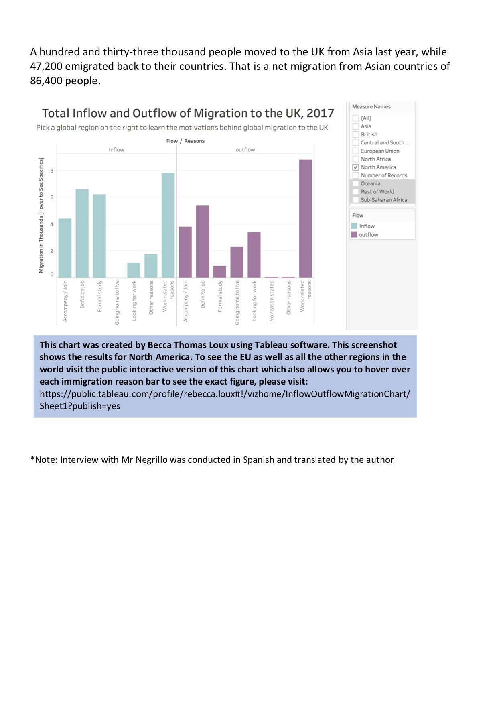

This is a piece originally written for a Data Journalism class taught by Glyn Mottershead at Cardiff Universtity as a part of my MSc in Computational and Data Journalism during the Autumn Semester of 2017. I am currently seeking publishers for this piece. All the interviews and data is up to date and accurate.
